|
Capital - A Critique of Political Economy: Volume 1-The Process of Capitalist Production
Info Box: The Catalogue

Aeschylus I: Oresteia: Agamemnon, The Libation Bearers, The Eumenides
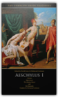
Aeschylus, David Grene, Richmond Lattimore
"These authoritative translations consign all other complete collections to the wastebasket."—Robert Brustein, The New Republic"This is it. No qualifications. Go out and buy it everybody."—Kenneth Rexroth, The Nation "The translations deliberately avoid the highly wrought and affectedly poetic; their idiom is contemporary....They have life and speed and suppleness of phrase."—Times Education Supplement "These translations belong to our time. A keen poetic sensibility repeatedly quickens them; and without this inner fire the most academically flawless rendering is dead."—Warren D. Anderson, American Oxonian "The critical commentaries and the versions themselves...are fresh, unpretentious, above all, functional."—Commonweal "Grene is one of the great translators."—Conor Cruise O'Brien, London Sunday Times "Richmond Lattimore is that rara avis in our age, the classical scholar who is at the same time an accomplished poet."—Dudley Fitts, New York Times Book Review Lysistrata/The Acharnians/The Clouds
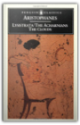
Aristophanes
Writing at the time of political and social crisis in Athens, Aristophanes was an eloquent yet bawdy challenger to the demagogue and the sophist. The Achanians is a plea for peace set against the background of the long war with Sparta. In Lysistrata a band of women tap into the awesome power of sex in order to end a war. The darker comedy of The Clouds satirizes Athenian philosophers, Socrates in particular, and reflects the uncertainties of a generation in which all traditional religious and ethical beliefs were being challenged.@PussyWhip What’s something we can leverage against men? What’s the one thing we’re good for again? It’s on the tip of my tongue. From Twitterature: The World's Greatest Books in Twenty Tweets or Less The Knights; Peace; The Birds; The Assembly Women; Wealth
Winter Trails Vermont and New Hampshire, 2nd: The Best Cross-Country Ski & Showshoe Trails
Spartina
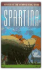
John Casey
Dick Pierce, the flawed hero of Spartina, is torn by his love for his wife and sons, his passion for his mistress and his obsession with his 54-foot boat, Spartina." The National Book Award winner is in paperback for the first time.
Adventures in Medialand: Behind the News, Beyond the Pundits
The Bacchae of Euripides: A New Translation with a Critical Essay
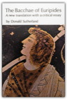
Euripides
This new translation of The Bacchae—that strange blend of Aeschylean grandeur and Euripidean finesse—is an attempt to reproduce for the American stage the play as it most probably was when new and unmutilated in 406 B.C. The achievement of this aim involves a restoration of the "great lacuna" at the climax and the discovery of several primary stage effects very likely intended by Euripides. These effects and controversial questions of the composition and stylistics are discussed in the notes and the accompanying essay.
Euripides IV: Rhesus / The Suppliant Women / Orestes / Iphigenia in Aulis
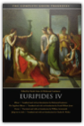
Euripides, David Grene, Richmond Lattimore
In nine paperback volumes, the Grene and Lattimore editions offer the most comprehensive selection of the Greek tragedies available in English. Over the years these authoritative, critically acclaimed editions have been the preferred choice of over three million readers for personal libraries and individual study as well as for classroom use.
Sophocles, The Oedipus Cycle: Oedipus Rex, Oedipus at Colonus, Antigone
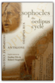
Dudley Fitts, Robert Fitzgerald, Sophocles
English versions of Sophocles’ three great tragedies based on the myth of Oedipus, translated for a modern audience by two gifted poets. Index.
Mirror Worlds: Or: The Day Software Puts the Universe in a Shoebox...How It Will Happen and What It Will Mean
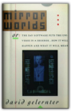
David Gelernter
Technology doesn't flow smoothly; it's the big surprises that matter, and Yale computer expert David Gelernter sees one such giant leap right on the horizon. Today's small scale software programs are about to be joined by vast public software works that will revolutionize computing and transform society as a whole. One such vast program is the "Mirror World."Imagine looking at your computer screen and seeing reality—an image of your city, for instance, complete with moving traffic patterns, or a picture that sketches the state of an entire far-flung corporation at this second. These representations are called Mirror Worlds, and according to Gelernter they will soon be available to everyone. Mirror Worlds are high-tech voodoo dolls: by interacting with the images, you interact with reality. Indeed, Mirror Worlds will revolutionize the use of computers, transforming them from (mere) handy tools to crystal balls which will allow us to see the world more vividly and see into it more deeply. Reality will be replaced gradually, piece-by-piece, by a software imitation; we will live inside the imitation; and the surprising thing is—this will be a great humanistic advance. We gain control over our world, plus a huge new measure of insight and vision. In this fascinating book—part speculation, part explanation—Gelernter takes us on a tour of the computer technology of the near future. Mirror Worlds, he contends, will allow us to explore the world in unprecedented depth and detail without ever changing out of our pajamas. A hospital administrator might wander through an entire medical complex via a desktop computer. Any citizen might explore the performance of the local schools, chat electronically with teachers and other Mirror World visitors, plant software agents to report back on interesting topics; decide to run for the local school board, hire a campaign manager, and conduct the better part of the campaign itself—all by interacting with the Mirror World. Gelernter doesn't just speculate about how this amazing new software will be used—he shows us how it will be made, explaining carefully and in detail how to build a Mirror World using technology already available. We learn about "disembodied machines," "trellises," "ensembles," and other computer components which sound obscure, but which Gelernter explains using familiar metaphors and terms. (He tells us that a Mirror World is a microcosm just like a Japanese garden or a Gothic cathedral, and that a computer program is translated by the computer in the same way a symphony is translated by a violinist into music.) Mirror Worlds offers a lucid and humanistic account of the coming software revolution, told by a computer scientist at the cutting edge of his field. The Mismeasure of Man
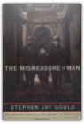
Stephen Jay Gould
The definitive refutation to the argument of The Bell Curve.When published in 1981, The Mismeasure of Man was immediately hailed as a masterwork, the ringing answer to those who would classify people, rank them according to their supposed genetic gifts and limits.Yet the idea of biology as destiny dies hard, as witness the attention devoted to The Bell Curve, whose arguments are here so effectively anticipated and thoroughly undermined. In this edition, Stephen Jay Gould has written a substantial new introduction telling how and why he wrote the book and tracing the subsequent history of the controversy on innateness right through The Bell Curve. Further, he has added five essays on questions of The Bell Curve in particular and on race, racism, and biological determinism in general. These additions strengthen the book's claim to be, as Leo J. Kamin of Princeton University has said, "a major contribution toward deflating pseudo-biological 'explanations' of our present social woes." The Art and Craft of Teaching
The Works and Days; Theogony; The Shield of Herakles
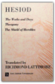
Hesiod
Epic poems by one who has been called the first Greek philosopher and theologian
Daphnis and Chloe
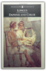
Longus
This is an EXACT reproduction of a book published before 1923. This IS NOT an OCR'd book with strange characters, introduced typographical errors, and jumbled words. This book may have occasional imperfections such as missing or blurred pages, poor pictures, errant marks, etc. that were either part of the original artifact, or were introduced by the scanning process. We believe this work is culturally important, and despite the imperfections, have elected to bring it back into print as part of our continuing commitment to the preservation of printed works worldwide. We appreciate your understanding of the imperfections in the preservation process, and hope you enjoy this valuable book.
Innumeracy: Mathematical Illiteracy and Its Consequences
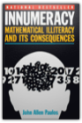
John Allen Paulos
Dozens of examples in innumeracy show us how it affects not only personal economics and travel plans, but explains mischosen mates, inappropriate drug-testing, and the allure of psuedo-science.
Beyond Numeracy
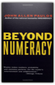
John Allen Paulos
From the author of the national bestseller Innumeracy, a delightful exploration and explanation of mathematical concepts from algebra to zero in easily accessible alphabetical entries. "Paulos . . . does for mathematics what The Joy of Sex did for the boudoir. . . ."—Washington Post Book World. First time in paperback.
Troilus and Cressida
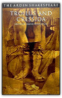
William Shakespeare, David M. Bevington, David Berington
This edition of Troilus and Cressida provide s a clear and authoritative text, detailed notes and comment ary on the same pages as the text and an in-depth survey of critical approaches to the play. '
Hamlet
The "Intellectual Backgrounds" and "Extracts from the Sources" sections, both highly praised, remain as germane as ever. Intellectual Backgrounds includes important readings on melancholy, demonology, the nature of man, and death, including works by Peter de la Primaudaye, Timothy Bright, Lewes Lavater, G. Gifford, Michel de Montaigne, and Heironymous Cardanus. Extracts from the Sources provides pre-Shakespearean accounts of the story of Hamlet, reprinting substantial excerpts from Saxo Grammaticus's Historia Danica and Belleforest's Histoires Tragiques. "Criticism" has been revised to accommodate the most significant recent interpretations of Hamlet while retaining the seminal essays of the First Edition. Twenty-three critical analyses are featured, including those by Samuel Johnson, Johann Wolfgang von Goethe, Samuel Taylor Coleridge, William Hazlitt, A. C. Bradley, D. H. Lawrence, T. S. Eliot, G. Wilson Knight, C. S. Lewis, Harry Levin, Peter J. Seng, Rebecca West, Arnold Kettle, Margaret W. Ferguson, Jacqueline Rose, and William Empson. An updated Selected Bibliography is also included. The Trouble With Physics: The Rise of String Theory, The Fall of a Science, and What Comes Next
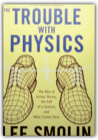
Lee Smolin
In this illuminating book, the renowned theoretical physicist Lee Smolin argues that fundamental physics — the search for the laws of nature — losing its way. Ambitious ideas about extra dimensions, exotic particles, multiple universes, and strings have captured the public’s imagination — and the imagination of experts. But these ideas have not been tested experimentally, and some, like string theory, seem to offer no possibility of being tested. Yet these speculations dominate the field, attracting the best talent and much of the funding and creating a climate in which emerging physicists are often penalized for pursuing other avenues. As Smolin points out, the situation threatens to impede the very progress of science. With clarity, passion, and authority, Smolin offers an unblinking assessment of the troubles that face modern physics — and an encouraging view of where the search for the next big idea may lead.
Sophocles II: Ajax, The Women of Trachis, Electra & Philoctetes
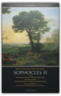
Sophocles, David Grene, Richmond Lattimore
"These authoritative translations consign all other complete collections to the wastebasket."—Robert Brustein, The New Republic"This is it. No qualifications. Go out and buy it everybody."—Kenneth Rexroth, The Nation "The translations deliberately avoid the highly wrought and affectedly poetic; their idiom is contemporary....They have life and speed and suppleness of phrase."—Times Education Supplement "These translations belong to our time. A keen poetic sensibility repeatedly quickens them; and without this inner fire the most academically flawless rendering is dead."—Warren D. Anderson, American Oxonian "The critical commentaries and the versions themselves...are fresh, unpretentious, above all, functional."—Commonweal "Grene is one of the great translators."—Conor Cruise O'Brien, London Sunday Times "Richmond Lattimore is that rara avis in our age, the classical scholar who is at the same time an accomplished poet."—Dudley Fitts, New York Times Book Review Rosencrantz and Guildenstern Are Dead
Why Things Bite Back: Technology and the Revenge of Unintended Consequences
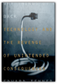
Edward Tenner
In this fascinating book, historian of science Edward Tenner takes a fine-toothed comb to several realms of technological intervention and discovers a resolute pattern of "revenge effects, "paradoxical, ironic consequences of the step s we take supposedly to improve our lives. Whether proliferating technology is fated to lead us to utopia, we can be certain that it has plenty of tricks up its sleeve.
Bicycling Science
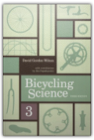
David Gordon Wilson
The bicycle is almost unique among human-powered machines in that it uses human muscles in a near-optimum way. This new edition of the bible of bicycle builders and bicyclists provides just about everything you could want to know about the history of bicycles, how human beings propel them, what makes them go faster, and what keeps them from going even faster. The scientific and engineering information is of interest not only to designers and builders of bicycles and other human-powered vehicles but also to competitive cyclists, bicycle commuters, and recreational cyclists.The third edition begins with a brief history of bicycles and bicycling that demolishes many widespread myths. This edition includes information on recent experiments and achievements in human-powered transportation, including the "ultimate human- powered vehicle," in which a supine rider in a streamlined enclosure steers by looking at a television screen connected to a small camera in the nose, reaching speeds of around 80 miles per hour. It contains completely new chapters on aerodynamics, unusual human-powered machines for use on land and in water and air, human physiology, and the future of bicycling. This edition also provides updated information on rolling drag, transmission of power from rider to wheels, braking, heat management, steering and stability, power and speed, and materials. It contains many new illustrations.
Four Colors Suffice: How the Map Problem Was Solved
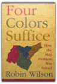
Robin Wilson
On October 23, 1852, Professor Augustus De Morgan wrote a letter to a colleague, unaware that he was launching one of the most famous mathematical conundrums in history—one that would confound thousands of puzzlers for more than a century. This is the amazing story of how the "map problem" was solved.The problem posed in the letter came from a former student: What is the least possible number of colors needed to fill in any map (real or invented) so that neighboring counties are always colored differently? This deceptively simple question was of minimal interest to cartographers, who saw little need to limit how many colors they used. But the problem set off a frenzy among professional mathematicians and amateur problem solvers, among them Lewis Carroll, an astronomer, a botanist, an obsessive golfer, the Bishop of London, a man who set his watch only once a year, a California traffic cop, and a bridegroom who spent his honeymoon coloring maps. In their pursuit of the solution, mathematicians painted maps on doughnuts and horseshoes and played with patterned soccer balls and the great rhombicuboctahedron. It would be more than one hundred years (and countless colored maps) later before the result was finally established. Even then, difficult questions remained, and the intricate solution—which involved no fewer than 1,200 hours of computer time—was greeted with as much dismay as enthusiasm. Providing a clear and elegant explanation of the problem and the proof, Robin Wilson tells how a seemingly innocuous question baffled great minds and stimulated exciting mathematics with far-flung applications. This is the entertaining story of those who failed to prove, and those who ultimately did prove, that four colors do indeed suffice to color any map. Conversations of Socrates
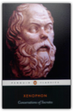
Xenophon, Robin H. Waterfield
After the execution of Socrates in 399 BC, a number of his followers wrote dialogues featuring him as the protagonist and, in so doing, transformed the great philosopher into a legendary figure. Xenophon's portrait is the only one other than Plato's to survive, and while it offers a very personal interpretation of Socratic thought, it also reveals much about the man and his philosophical views. In 'Socrates' Defence' Xenophon defends his mentor against charges of arrogance made at his trial, while the 'Memoirs of Socrates' also starts with an impassioned plea for the rehabilitation of a wronged reputation. Along with 'The Estate-Manager', a practical economic treatise, and 'The Dinner-Party', a sparkling exploration of love, Xenophon's dialogues offer fascinating insights into the Socratic world and into the intellectual atmosphere and daily life of ancient Greece.
|


My Library
Collection Total:
798 Items
798 Items
Last Updated:
Apr 7, 2013
Apr 7, 2013
 Made with Delicious Library
Made with Delicious Library